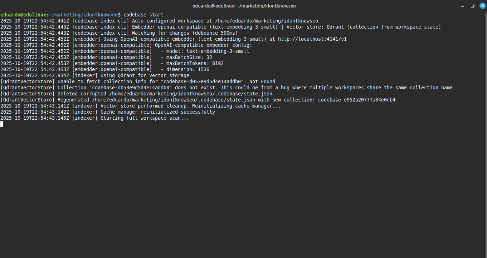
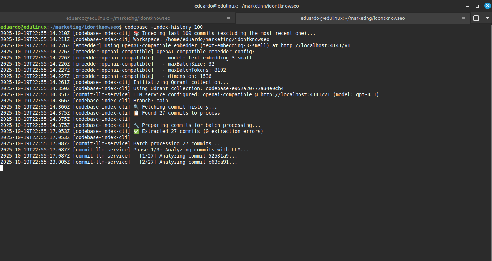

Codebase Index CLI


Node.js tool for semantic code indexing and search using vector embeddings. Includes automatic git commit tracking with LLM analysis for semantic commit history search.
Repository: github.com/dudufcb1/codebase-index-cli
Motivation
This is an experimental project born from a simple need: giving semantic search capabilities to AI coding assistants that don't have it built-in.
While working with tools like Claude Code, Cline, and Codex, I noticed they often struggle with large codebases because they lack native semantic search. They might miss relevant code scattered across multiple files, or fail to understand the broader context of a project.
This CLI aims to be a lightweight semantic context engine that any AI assistant can use. It runs in the background, indexes your codebase in real-time, and makes it searchable through natural language queries.
Integration with Claude Code
The CLI is designed to hook into Claude Code seamlessly:
- Auto-start on session: Automatically begins indexing when you start Claude Code
- Real-time sync: Watches for file changes and keeps the index up-to-date
- Status line integration: Shows indexing status directly in Claude's status line
- Zero configuration: Works out of the box with Claude Code's hooks system
See the Claude Code Integration section below for setup instructions.
Humble Goals
This project is humble in its goals: it's not trying to replace specialized tools, but rather to fill a gap for developers who want semantic code understanding in environments that don't natively support it.
Features
- Semantic Code Search - Vector-based search across your entire codebase
- Dual Storage Options - SQLite-vec (local) or Qdrant (scalable)
- Real-time File Watching - Automatically re-indexes on file changes
- Git Commit Tracking - Monitors commits and indexes them with LLM analysis
- Tree-sitter Parsing - Semantic code parsing for 29+ languages
- Flexible Configuration - Per-vector-store embedder configuration
Installation
Linux (Tested)
git clone https://github.com/dudufcb1/codebase-index-cli.git
cd codebase-index-cli
./scripts/install.sh
macOS / Windows (Untested)
Installation scripts are provided but have not been tested:
- macOS:
./scripts/install-macos.sh - Windows:
powershell -ExecutionPolicy Bypass -File scripts\install.ps1
Help Wanted
If you test these scripts and they work (or you fix them), please submit a PR! See INSTALL.md for detailed platform-specific instructions and manual installation alternatives.
Quick Start
- Run the installer (see Installation above)
The installer compiles the CLI and creates wrappers:
- codebase - Uses Qdrant vector store (remote server)
- codesql - Uses SQLite-vec (local database)
- codebase-index - Legacy compatibility
-
Configure environment: Copy
.env.exampleto.env(in the project root) and edit it with your credentials. This file serves as global configuration for all workspaces; no need to create additional.envfiles in each repository. -
From any project directory:
# Using SQLite-vec (local database)
codesql -start .
# Using Qdrant (requires Qdrant server running)
codebase -start .
The monitor performs a complete directory scan and watches for changes until you press Ctrl+C.

CLI in action: codebase start . configuring workspace, embedder, and Qdrant, then starting the initial scan
Vector Store Options
The vector store is determined by which command you use:
SQLite-vec (via codesql command)
- Local database stored in
.codebase/vectors.db - No external services required
- Portable - can be committed with your project
- Best for: Small/medium projects, local development, offline usage
- Usage:
codesql -start .
Qdrant (via codebase command)
- High performance vector search
- Scalable to millions of vectors
- Best for: Large projects, production, multiple projects sharing an index
- Requires: Qdrant server running (e.g.,
docker run -p 6333:6333 qdrant/qdrant) - Usage:
codebase -start .
Vector-Store-Specific Embedders
NEW Feature
You can now use different embedders for SQLite vs Qdrant!
This allows you to optimize your embedding strategy:
- Use a smaller/cheaper model for local SQLite development
- Use a larger/more accurate model for production Qdrant
- Use local Ollama for SQLite (offline) and cloud API for Qdrant (online)
Quick Example
# Global fallback (used by both if no specific config)
EMBED_PROVIDER=openai-compatible
EMBED_BASE_URL=https://api.studio.nebius.com/v1/
EMBED_API_KEY=your-key
EMBED_MODEL=Qwen/Qwen3-Embedding-8B
# SQLite-specific (overrides global for SQLite)
SQLITE_EMBED_MODEL=text-embedding-3-small
SQLITE_EMBED_DIMENSION=1536
# Qdrant-specific (overrides global for Qdrant)
QDRANT_EMBED_MODEL=Qwen/Qwen3-Embedding-8B
QDRANT_EMBED_DIMENSION=4096
See EMBEDDER_CONFIG.md in the repository for detailed examples and use cases.
Available Commands
| Command | Description |
|---|---|
-start <path> |
Start the monitor (creates collection if it doesn't exist, updates if it does) |
-restart <path> |
Clear local cache and recreate collection before re-indexing |
-stats <path> |
Show current collection and number of tracked files without modifying anything |
-full-reset <path> |
Completely removes all local data (.codebase/, .roo-index-cli/, .roo-code/). Useful when you don't know which vector store you were using or want to start from scratch |
-index-history <count> [path] |
Retroactively index historical commits. Processes the last N commits (excluding the most recent one) and indexes them with LLM analysis. Requires Qdrant and LLM configuration |
-semantic-search <query> [path] [options] |
Runs an ad-hoc vector search against the workspace collection (Qdrant only). Generates a fresh embedding for the query, optionally reranks the results with Voyage AI, and prints a single compact report block |
Examples
# Start real-time indexing
codebase -start .
# Index the last 50 commits (excluding the most recent)
codebase -index-history 50 .
# Index 100 commits from a specific directory
codebase -index-history 100 /path/to/project
# Show stats
codebase -stats .
# Ad-hoc semantic search (rerank disabled)
codebase semantic-search "tree sitter" --no-rerank
# Same search forcing a collection and rerank model
codebase semantic-search "database migrations" --collection=codebase-123 --limit=20 --rerank
# Full reset
codebase -full-reset .
Voyage Reranker Configuration
The semantic-search command can re-score the top vector hits with Voyage AI. Configure it via environment variables:
| Purpose | Primary variable | Fallback |
|---|---|---|
| API key | VOYAGE_RERANK_API_KEY |
VOYAGEAI_API_KEY |
| Model | VOYAGE_RERANK_MODEL |
VOYAGEAI_RERANK_MODEL → defaults to rerank-lite-1 |
| Base URL (optional) | VOYAGE_RERANK_BASE_URL |
VOYAGEAI_BASE_URL |
Set those values in your global .env (or per-session) before running codebase semantic-search .... If the key is missing the rerank step is skipped automatically.
Git Commit Tracking (Experimental)
Enable automatic git commit monitoring and LLM-powered analysis to make your commit history semantically searchable.
Important
Git commit tracking is only supported with Qdrant. SQLite-vec currently has a hardcoded schema for code chunks only and does not support the additional metadata fields required for git commits.
Note for contributors: Git tracking support for SQLite-vec could be added by extending the schema or creating a separate table. See src/vectorStore/sqliteVecClient.ts for the current implementation.
How It Works
When enabled, the CLI watches the .git directory and:
- Detects commits - Monitors new commits, pulls, merges, and branch changes
- Extracts metadata - Author, date, message, diff, changed files, and stats
- LLM Analysis - Sends commit context to an LLM for semantic understanding
- Vector Indexing - Stores the analysis in the same collection as your code
- Semantic Search - Query your commit history using natural language
Configuration
Add these variables to your .env file:
# Enable git tracking
TRACK_GIT=true
# Configure LLM for commit analysis (required for indexing)
TRACK_GIT_LLM_PROVIDER=openai-compatible
TRACK_GIT_LLM_ENDPOINT=http://localhost:4141/v1
TRACK_GIT_LLM_MODEL=gpt-4.1
TRACK_GIT_LLM_API_KEY=sk-your-key-here
Searching Commits
Use the provided client example to search your commit history:
# Get all commits (max 5)
node client_examples/search-commits.js codebase-908e5cbf73d44edcbc
# Semantic search
node client_examples/search-commits.js codebase-908e5cbf73d44edcbc "cleanup and refactoring"
node client_examples/search-commits.js codebase-908e5cbf73d44edcbc "authentication improvements"
The search returns:
- Commit hash, branch, author, and date
- Commit message
- Files changed with statistics
- LLM-generated semantic analysis
What Gets Indexed
Each commit includes:
- Metadata: Hash, author, email, date, branch
- Changes: Files added/modified/deleted/renamed
- Statistics: Insertions, deletions, files changed
- Diff: Full unified diff (for LLM context)
- Analysis: LLM-generated semantic summary
Use Cases
- "Find commits related to authentication"
- "Show refactoring work in the last month"
- "Commits that fixed database issues"
- "Changes affecting the user service"
- "Security-related updates"
Retroactive Indexing
NEW Feature
You can now index historical commits retroactively!
The -index-history command allows you to process commits that happened before you started using this tool:
# Index the last 50 commits (excluding the most recent)
codebase -index-history 50 .
# Index 200 commits for comprehensive history
codebase -index-history 200 /path/to/project

Retroactive commit indexing in action: codebase -index-history 100 analyzing historical commits with LLM
How it works:
- Fetches the last N commits from your git history (excluding the most recent one)
- Extracts metadata, diffs, and statistics for each commit
- Sends each commit to your configured LLM for semantic analysis
- Indexes the analysis in Qdrant alongside your code
Important notes:
- Excludes the most recent commit - The real-time tracking already indexed it
- Requires LLM configuration - Same LLM env vars as real-time tracking
- Only works with Qdrant - SQLite-vec implementation doesn't currently support git metadata
- Upsert handles duplicates - Re-running with overlapping commits is safe
- Processing time - Expect ~2-3 seconds per commit (LLM analysis time)
Example workflow:
# 1. Start real-time tracking (indexes new commits going forward)
codebase -start .
# 2. In another terminal, index 100 historical commits
codebase -index-history 100 .
# 3. Search across all indexed commits (past and future)
node client_examples/search-commits.js codebase-xxx "authentication changes"
Manual Configuration (Optional)
You can create a codebase-index.config.json file in the project directory if you prefer to define everything explicitly:
{
"workspacePath": "/path/to/workspace",
"embedder": {
"provider": "openai",
"model": "text-embedding-3-small",
"apiKey": "sk-..."
},
"qdrant": {
"url": "http://localhost:6333",
"apiKey": null
},
"watch": {
"debounceMs": 500
}
}
Important variables:
workspacePath: Absolute path to the repository to indexembedder: Supported provider (openai, openai-compatible, ollama) and credentialsqdrant: Qdrant instance where vectors will be stored
Direct Usage Without Wrapper
If you don't want to install the wrapper, you can run directly:
What Does the CLI Store?
Each workspace maintains its own state in .codebase/:
.codebase/state.json: Assigned Qdrant collection, creation/update dates, indexing status.codebase/cache.json: File hashes to detect changes. Automatically regenerated after-restart.codebase/vectors.db: SQLite database (when usingcodesqlcommand)
Legacy files (.roo-index-cli/state.json and .roo-code/index-cache.json) are migrated on first run.
Client Examples
The client_examples/ directory contains standalone scripts for querying your indexed codebase and commit history:
Code Search (SQLite-vec)
Interactive search scripts that connect directly to your local .codebase/vectors.db:
# JavaScript (Node.js)
cd client_examples
npm install better-sqlite3 sqlite-vec dotenv
node search-demo.js
# Python
pip install sqlite-vec requests python-dotenv
python search-demo.py
Commit History Search (Qdrant)
Search git commits analyzed by LLM (requires TRACK_GIT=true):
# No dependencies needed - uses native fetch
node client_examples/search-commits.js <collection-name> [query]
# Examples:
node client_examples/search-commits.js codebase-908e5cbf73d44edcbc
node client_examples/search-commits.js codebase-908e5cbf73d44edcbc "cleanup and refactoring"
See client_examples/README.md for detailed documentation.
Architecture
The CLI is built with a modular architecture:
- Indexer Core (
src/indexer.ts) - Main orchestrator - File Watching (
src/indexing/workspaceWatcher.ts) - Real-time change detection - Git Integration (
src/indexing/gitCommitWatcher.ts) - Commit monitoring - LLM Service (
src/indexing/commitLlmService.ts) - Commit analysis - Vector Stores (
src/vectorStore/) - Qdrant and SQLite-vec implementations - Embedders (
src/embedder/) - OpenAI, OpenAI-compatible, and Ollama support - Tree-sitter (
src/services/tree-sitter/) - Semantic code parsing for 29+ languages
Supported Languages (Tree-sitter)
When USE_TREE_SITTER=true, the CLI parses code semantically for these languages:
C, C++, C#, CSS, Elisp, Elixir, Go, HTML, Java, JavaScript, Kotlin, Lua, OCaml, PHP, Python, Ruby, Rust, Scala, Solidity, Swift, SystemRDL, TLA+, TOML, TypeScript, TSX, Vue, Zig, and more.
Claude Code Integration
This CLI integrates seamlessly with Claude Code through hooks and status line customization.
Auto-Start on Session
Configure Claude Code to automatically start the indexer when you begin a session.
Edit ~/.claude/settings.json and add:
{
"hooks": {
"SessionStart": [
{
"hooks": [
{
"type": "command",
"command": "nohup ~/.local/bin/codebase -start \"$CLAUDE_PROJECT_DIR\" > /dev/null 2>&1 &",
"timeout": 10
}
]
}
]
}
}
What this does:
- Automatically starts
codebase -startwhen Claude Code opens a project - Runs in background (
nohup ... &) so it doesn't block Claude - Uses
$CLAUDE_PROJECT_DIRto index the current project directory - Times out after 10 seconds if something goes wrong
Note
Adjust the path (~/.local/bin/codebase) if you installed the CLI in a different location.
Status Line Integration
Show real-time indexing status in Claude's status line.
1. Create the status line script ~/.claude/statusline.sh:
#!/usr/bin/env bash
# Line 1: Original context usage from ccstatusline
bunx -y ccstatusline@latest
# Line 2: Codebase indexing status with detailed stats
if [ -n "$CLAUDE_PROJECT_DIR" ] && [ -f "$CLAUDE_PROJECT_DIR/.codebase/state.json" ]; then
STATE_FILE="$CLAUDE_PROJECT_DIR/.codebase/state.json"
# Extract indexing stats
INDEXING_STATE=$(jq -r '.indexingStatus.state // ""' "$STATE_FILE" 2>/dev/null)
LAST_ACTION=$(jq -r '.lastActivity.action // ""' "$STATE_FILE" 2>/dev/null)
TOTAL_VECTORS=$(jq -r '.qdrantStats.totalVectors // 0' "$STATE_FILE" 2>/dev/null)
UNIQUE_FILES=$(jq -r '.qdrantStats.uniqueFiles // 0' "$STATE_FILE" 2>/dev/null)
UPDATED_AT=$(jq -r '.updatedAt // ""' "$STATE_FILE" 2>/dev/null)
# Calculate time since last update
if [ -n "$UPDATED_AT" ]; then
LAST_UPDATE=$(date -d "$UPDATED_AT" +%s 2>/dev/null)
NOW=$(date +%s)
SECONDS_AGO=$((NOW - LAST_UPDATE))
if [ $SECONDS_AGO -lt 60 ]; then
TIME_AGO="${SECONDS_AGO}s"
elif [ $SECONDS_AGO -lt 3600 ]; then
TIME_AGO="$((SECONDS_AGO / 60))m"
else
TIME_AGO="$((SECONDS_AGO / 3600))h"
fi
else
TIME_AGO="unknown"
fi
# Set color based on state
if [ "$INDEXING_STATE" = "watching" ]; then
STATE_COLOR="\x1b[32m" # green
elif [ "$INDEXING_STATE" = "indexing" ]; then
STATE_COLOR="\x1b[33m" # yellow
elif [ "$INDEXING_STATE" = "error" ]; then
STATE_COLOR="\x1b[31m" # red
else
STATE_COLOR="\x1b[90m" # gray
fi
# Display status
echo -e "${STATE_COLOR}${INDEXING_STATE}\x1b[0m | \x1b[36m${LAST_ACTION}\x1b[0m | \x1b[35m${UNIQUE_FILES} files\x1b[0m | \x1b[34m${TOTAL_VECTORS} blocks\x1b[0m | \x1b[90m${TIME_AGO} ago\x1b[0m"
else
echo -e "\x1b[90mcodebase: not initialized\x1b[0m"
fi
2. Make it executable:
3. Configure Claude Code in ~/.claude/settings.json:
What you'll see:
- Line 1: Claude's normal context usage (tokens, cost, etc.)
- Line 2: Indexing status with color coding:
- 🟢
watching- Index up-to-date, monitoring for changes - 🟡
indexing- Currently processing files - 🔴
error- Something went wrong - ⚪
not initialized- No index for this project yet
Example output:
Complete Configuration Example
Here's a complete ~/.claude/settings.json with both hooks and status line:
{
"hooks": {
"SessionStart": [
{
"hooks": [
{
"type": "command",
"command": "nohup ~/.local/bin/codebase -start \"$CLAUDE_PROJECT_DIR\" > /dev/null 2>&1 &",
"timeout": 10
}
]
}
]
},
"statusLine": {
"type": "command",
"command": "~/.claude/statusline.sh",
"padding": 0
}
}
Requirements:
jqmust be installed:sudo apt install jq(Linux) orbrew install jq(macOS)- Adjust paths if you installed the CLI in a different location
- The status line updates automatically (Claude polls it periodically)
Troubleshooting
Common Issues and Solutions
1. Embedding Dimension Mismatch
Problem: Errors like "dimension mismatch" or "vector size incompatible"
Cause: Your embedder configuration changed, but the collection was created with a different dimension.
Solutions:
# Option 1: Full reset (deletes all indexed data)
codebase -full-reset .
# Option 2: Restart with fresh collection (recommended)
codebase -restart .
Important
When searching, always use the same embedder configuration (model and dimension) that you used for indexing.
2. Embedder Requirements
Problem: "Unsupported embedder provider" or connection errors
Required: This project requires an OpenAI-compatible API. It supports:
✅ Supported:
- OpenAI official API (provider: openai)
- OpenAI-compatible APIs (provider: openai-compatible)
- LM Studio
- Nebius AI Studio
- Together AI
- Any API following OpenAI's format
- Ollama (provider: ollama) - requires explicit dimension configuration
❌ Not supported: - Google Gemini API (different format) - Anthropic Claude API (different format) - Custom embedding APIs (unless OpenAI-compatible)
Configuration example:
# OpenAI-compatible provider (recommended)
EMBED_PROVIDER=openai-compatible
EMBED_BASE_URL=http://localhost:4141/v1 # Your API endpoint
EMBED_API_KEY=sk-your-key-here
EMBED_MODEL=text-embedding-3-small
EMBED_DIMENSION=1536 # Must match your model's output
3. Git Commit Tracking Issues
Problem: "Git commit tracking only works with Qdrant" error
Cause: You're using codesql (SQLite-vec) but git tracking requires Qdrant.
Solution:
# Use the codebase command instead
codebase -start .
# Or set the environment variable
VECTOR_STORE=qdrant ./dist/index.js -start .
Why: The current SQLite-vec implementation uses a hardcoded schema designed for code chunks only. Git commits require additional metadata fields that haven't been implemented yet.
4. LLM Configuration for Git Tracking
Problem: Git tracking enabled but commits aren't being analyzed
Cause: Missing LLM configuration variables.
Required environment variables:
TRACK_GIT=true
TRACK_GIT_LLM_PROVIDER=openai-compatible
TRACK_GIT_LLM_ENDPOINT=http://localhost:4141/v1
TRACK_GIT_LLM_MODEL=gpt-4.1
TRACK_GIT_LLM_API_KEY=sk-your-key-here
Note
The LLM for git tracking is separate from the embedder. You can use different providers and models for each.
5. Collection Not Found (Qdrant)
Problem: "Collection doesn't exist" when using -index-history or search
Cause: Collection hasn't been created yet.
Solution:
# Create the collection by starting the indexer first
codebase -start .
# Then in another terminal, index historical commits
codebase -index-history 50 .
6. Qdrant Server Not Running
Problem: "Connection refused" or "ECONNREFUSED" errors
Cause: Qdrant server is not running or wrong URL.
Solution:
# Start Qdrant with Docker (recommended)
docker run -p 6333:6333 qdrant/qdrant
# Or specify custom Qdrant URL
QDRANT_URL=http://your-qdrant-server:6333
7. Search Returns No Results
Possible causes:
- Dimension mismatch - See issue #1 above
- Different embedder - Search must use the same model as indexing
- Empty index - Run
codebase -stats .to check if files are indexed - Wrong collection - Verify collection name in
.codebase/state.json
Debug steps:
# 1. Check stats
codebase -stats .
# 2. Verify embedder configuration
cat .env | grep EMBED
# 3. Check collection state
cat .codebase/state.json
# 4. If all else fails, restart
codebase -restart .
8. Performance Issues
Problem: Indexing is very slow
Solutions:
# Increase batch size
INDEXER_BATCH_SIZE=100 # Default: 50
# Use smaller embedding model
EMBED_MODEL=text-embedding-3-small # Faster than large models
# Adjust file globs to exclude large directories
INDEXER_FILE_GLOBS="src/**/*.ts,src/**/*.js"
# Disable tree-sitter parsing
USE_TREE_SITTER=false # Faster, but less semantic
Configuration Best Practices
- Always use the same embedder for indexing and searching
- Specify dimension explicitly to avoid mismatches
- Keep
.envfile in project root for consistent configuration - Use Qdrant for production and large projects
- Use SQLite-vec for small projects and offline development
- Test with
-statscommand before heavy indexing
Getting Help
If you encounter issues not covered here:
- Check the logs for detailed error messages
- Run with
--log-level debugfor verbose output - Verify your
.envconfiguration - Check
.codebase/state.jsonfor collection info - Try
-full-resetas a last resort (deletes all indexed data) - Open an issue on GitHub with logs and configuration
Related Projects
Semantic Search MCP
MCP server that enables semantic search across multiple IDEs (Claude Code, Cline, Cursor, etc.) by connecting to the indexes created by this CLI tool.
While this CLI handles the indexing, the MCP server provides:
- Universal search interface - Works with any MCP-compatible IDE
- Code search - Query indexed codebases using natural language
- Commit history search - Semantic search across git commits
- Multi-project support - Search across different workspaces
- SQLite and Qdrant support - Compatible with both storage backends
Perfect companion: Index your codebase with this CLI, search it from your favorite IDE using the MCP server.
Repository: github.com/dudufcb1/semantic-search
License
MIT